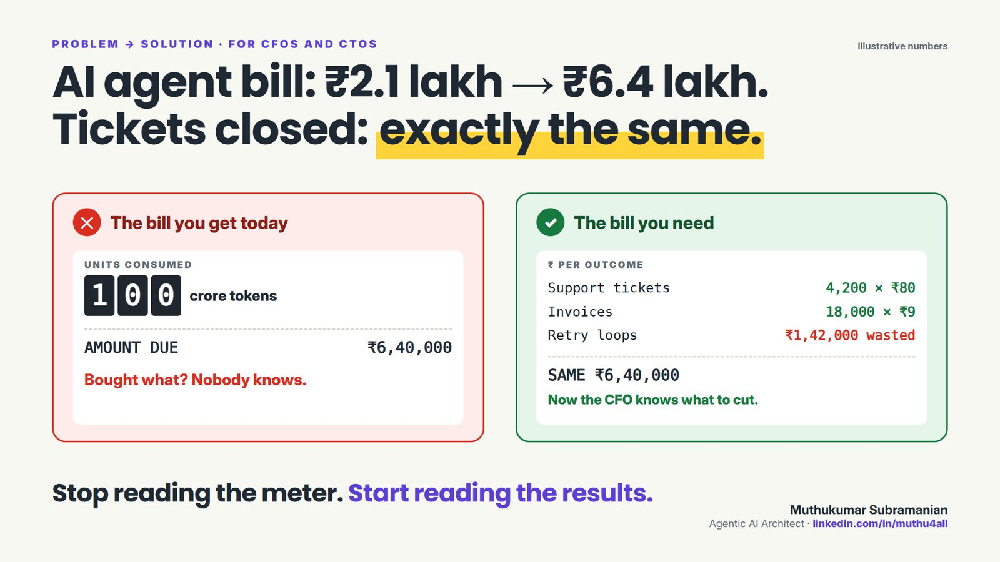

Your AI Agent's Bill Tripled. Nobody Can Say What It Bought.
By Muthukumar Subramanian · Agentic AI Architect

August: ₹2.1 lakh. September: ₹3.8 lakh. October: ₹6.4 lakh.
The CFO puts the three invoices from the AI vendor on the table and asks one question: "Tickets closed are the same as August. What exactly did we buy?"
The CTO opens a dashboard. It shows tokens. Millions and millions of tokens.
(All the numbers here are illustrative, but I keep hearing this conversation.)
It's like your EB bill at home. It tells you units consumed and the amount due. It will never tell you whether the money went on the AC or on the geyser someone forgot to switch off.
A token bill tells you what you used. It doesn't tell you what you got.
The problem: agents spend money while nobody's looking
A chatbot costs money when a person types. An agent costs money every time it thinks. One customer question can mean ten model calls, each carrying the whole conversation so far, plus the output of every tool it used.
Now here's the part most teams miss, and it's my contrarian take: your biggest AI cost may not be the model. It may be your legacy system.
Your agent calls a CRM built in 2009. That API was designed for a screen, so it returns the customer's entire record, 200 fields, when the agent needs six. The agent carries those 200 fields through every step of the conversation, and you pay for them every time. An old ERP call times out, the agent retries, and you pay again for nothing.
Nobody planned this. The old API just never had a reason to be thrifty.
👉 [IMAGE: B-day06-2-in-article-itemised-bill.png]
Caption: The same ₹6.4 lakh, itemised by what it bought. One line bought nothing. All figures illustrative.
The solution: measure the outcome, then cut the waste
→ 1. Bill per outcome, not per token. Tag every model call with the agent and the task. Then report ₹ per resolved ticket and ₹ per processed invoice. That's a number a CFO can argue with.
→ 2. Put a thin layer over the old API. A small tool that returns the six fields the agent needs, not the 200 the screen needed. No rewrite required.
→ 3. Send each job to the cheapest thing that can do it. Cache what you've already answered. Use a small model for small jobs. Keep the large model for real thinking.
→ 4. Let work wait. Anything that can run overnight belongs in a batch lane. This morning's Day 6 covers how queues and batching do that, and OpenAI and Anthropic both advertise 50% off for batch work.
→ 5. Stop the loops. Set a limit on steps and retries per task, so one timeout can't quietly become a thousand calls.
👉 [IMAGE: B-day06-3-in-article-routing-ladder.png]
Caption: The routing ladder. Three questions before any request reaches the expensive model.
Watch it happen
👉 [GIF: B-day06-4-in-article-meter.gif]
Caption: The meter runs for three months. Then the bill gets split by what it actually bought.
The hard parts
→ Outcomes are harder to count than tokens. What's a "resolved" ticket? One the customer didn't reopen in a week? Finance and support have to agree, and that argument will take longer than the code.
→ Cheap can be expensive. A small model that gets 5% of invoices wrong may cost more in rework than it saves. Test on your real data before you switch.
→ Shared costs don't split cleanly. When one agent serves three departments, someone has to decide who pays.
→ Cost pressure can hurt quality. If the team is only measured on ₹ per ticket, it'll close tickets badly. Track quality next to cost.
The opportunity
Every company running agents will get this question from its CFO. Few can answer it today.
Two roles are forming around that gap. A forward deployed engineer (FDE) is an engineer who sits with the customer's team and ships the agent on their real systems, so that's the person who finds the 200-field CRM call. The second is the AI FinOps person, who takes the cloud cost discipline many companies already have and ties agent spend to business outcomes. "FinOps for AI" is already a phrase consultancies and cloud cost teams use, but the job titles are still settling. Some teams give this work to an AgentOps engineer.
For Indian IT services firms and consultants, a fixed-price "AI bill audit" is an easy first sale: trace one month of agent spend, find the waste, and put a ₹ per outcome on every agent. For product builders, the gap is cost tools that speak the CFO's language, not the engineer's. If you already do cloud FinOps, this is your next step.
Your turn 👇
Next budget: would you sign off a token budget or an outcome budget? Pick one.
Tag the CFO who's about to ask what the AI agents actually bought.